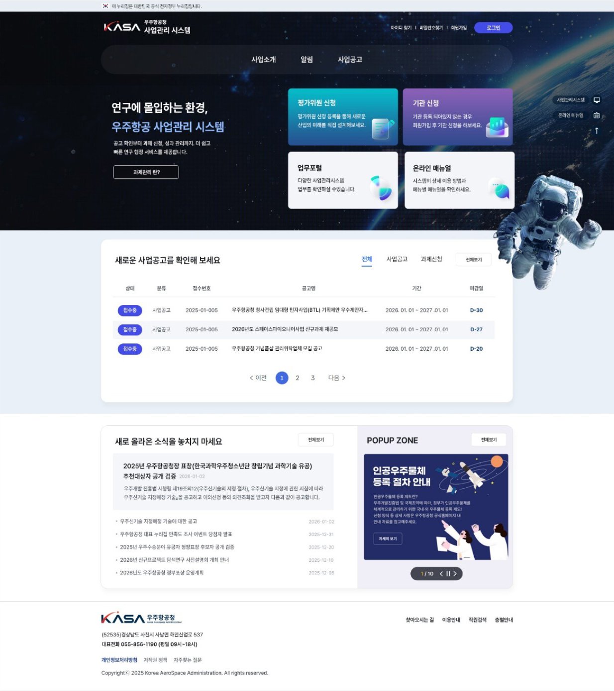
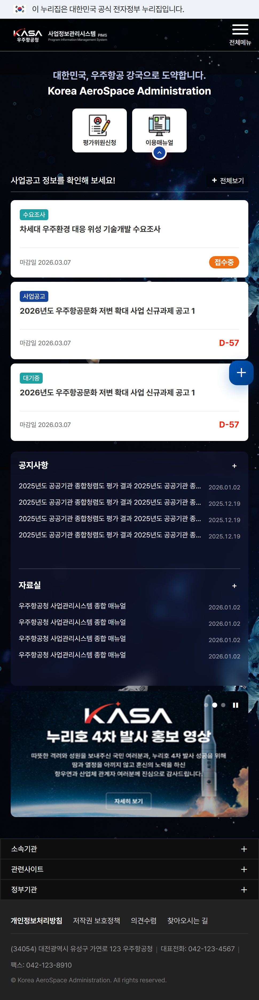
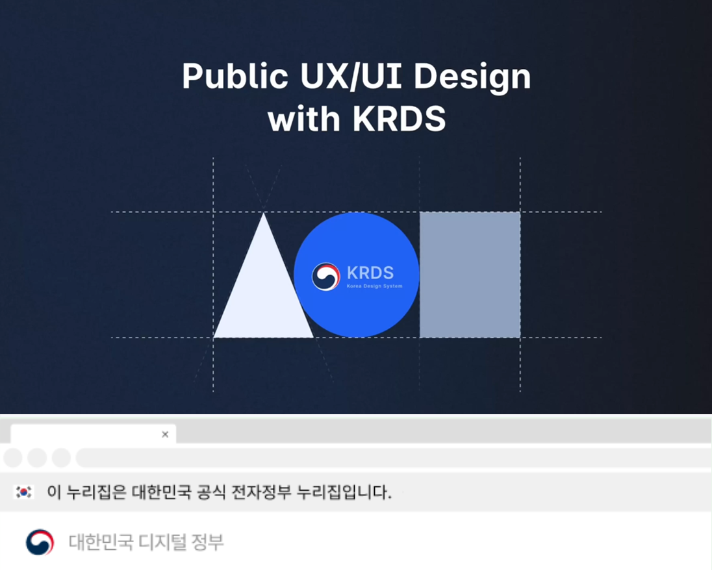
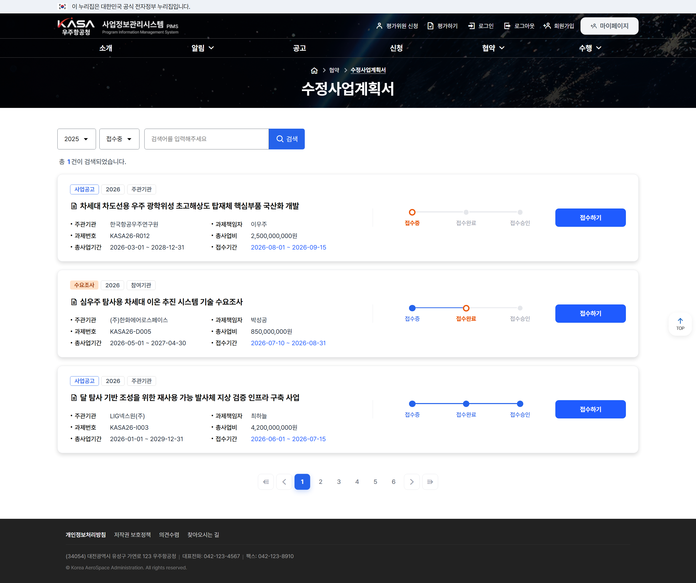
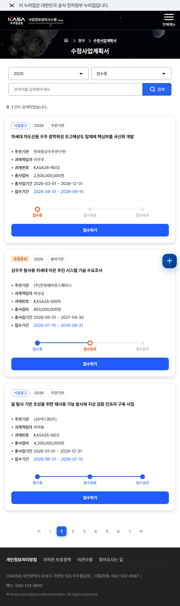
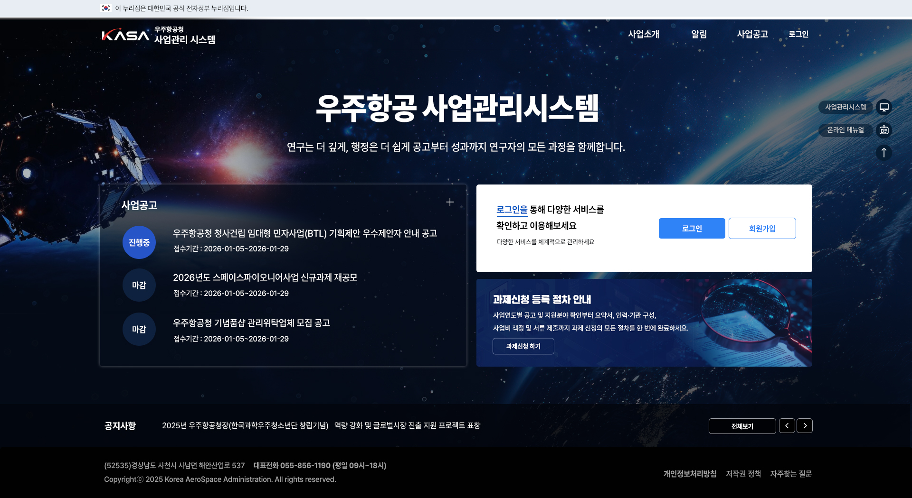

CONCEPT A
범부처 IRIS 연계 사용자 친화형 UI 시안
범부처 통합연구지원시스템(IRIS)과의 높은 연계성을 고려하여, 기존 IRIS 시스템에 익숙한 연구자가 혼선 없이 직관적으로 이용할 수 있도록 UX/UI 구조를 친숙하게 설계한 시안입니다.
UI/UX 디자이너 이지수


우주항공청 사업정보시스템(PIMS)에 KRDS(대한민국 정부 디자인 시스템) 가이드라인을 엄격히 적용했습니다. 최상단에 공식 전자정부 누리집 인증 배너를 명확히 표기하여 신뢰성을 높였으며, 우주항공청 상징 로고 기반의 헤더·푸터 아이덴티티와 로그인, 신청, 공고 등 서비스 전반에 표준 공통 패턴을 구현하여 사용 편의성을 극대화했습니다.

우측 상단에 주요 사업공고 및 수요조사 정보를 직관적인 카드 형태로 전면 배치하여,
D-day 및 접수 상태를 한눈에 파악하고 즉시 접근할 수 있도록 구현했습니다.
또한 좌측에는 이용매뉴얼 및 핵심 바로가기 버튼을 배치하여, 클릭 시 슬라이드 형태로 다양한 매뉴얼을 신속하게 탐색할 수 있도록 UI 사용성을 극대화했습니다.
모바일 환경까지 고려한 카드형 공고 레이아웃을 구성하여 핵심 과제 정보를 깔끔하고 명확하게 전달합니다. 특히 상세 페이지에 접속하지 않고도 목록에서 현재 진행 상태(접수중·접수완료·접수승인)를 프로그레스 바 형태로 즉시 파악할 수 있도록 직관적인 위치 정보를 제공하여 사용자 탐색 편의성을 크게 향상시켰습니다.

스마트폰, 태블릿 등 기기별 해상도 차이와 다양한 모바일 브라우저 환경에 완벽히 대응하도록 모바일 레이아웃을 정교하게 설계했습니다. 좌측의 메인 화면과 우측의 서브 화면 모두 화면 크기에 맞게 핵심 정보가 자연스럽게 재배치되어, 어떠한 기기 접속 환경에서도 최상의 시독성과 편안한 탐색 경험을 선사합니다.

최종 채택안 외에 브랜드 방향성을 검토하기 위해 기획·제작되었던 디자인 컨셉 시안입니다.

범부처 통합연구지원시스템(IRIS)과의 높은 연계성을 고려하여, 기존 IRIS 시스템에 익숙한 연구자가 혼선 없이 직관적으로 이용할 수 있도록 UX/UI 구조를 친숙하게 설계한 시안입니다.

불필요한 비주얼 요소를 최소화하고 사용자가 주요 사업공고 및 핵심 진행 상태를 즉시 파악할 수 있도록 과제 정보 탐색 효율성을 극대화한 시안입니다.